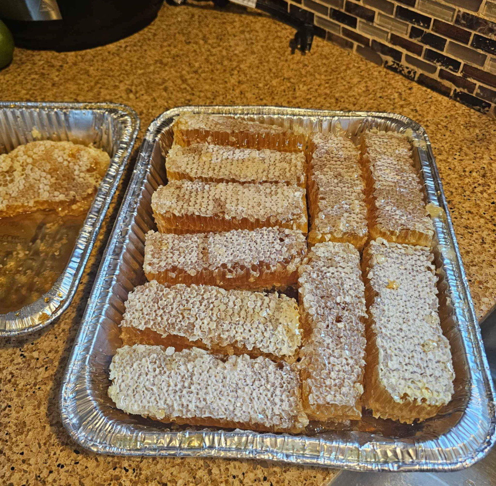
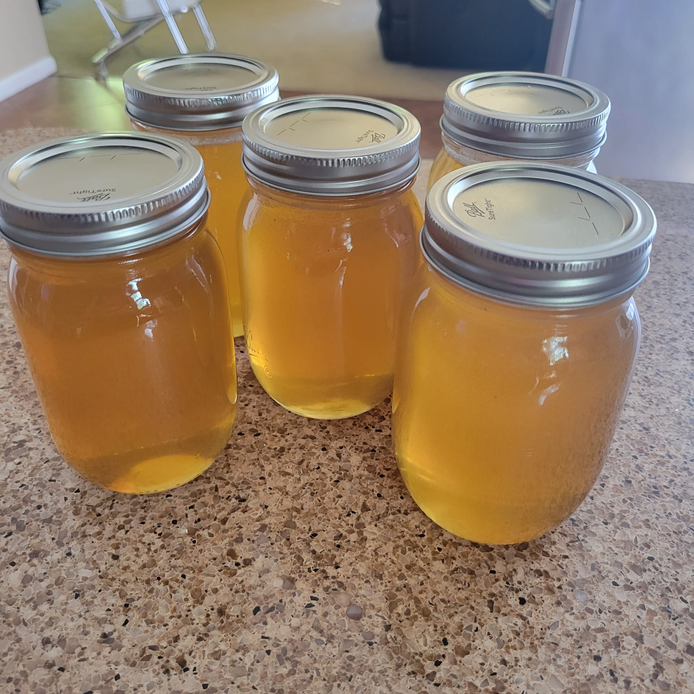
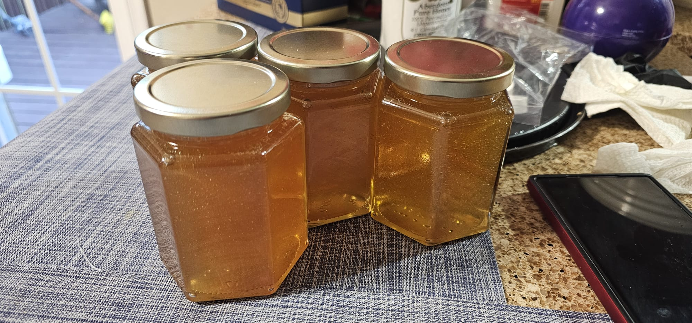
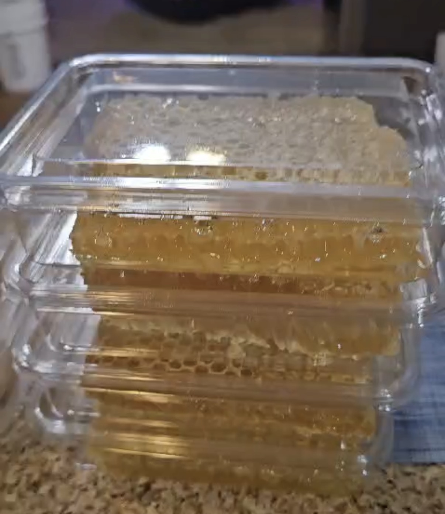
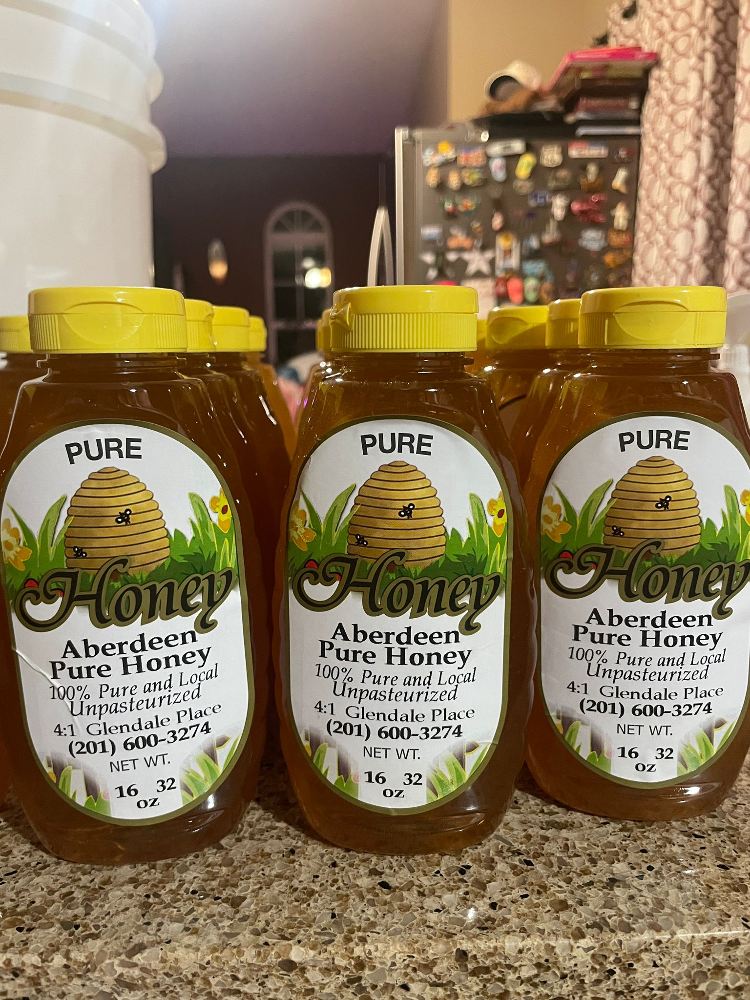
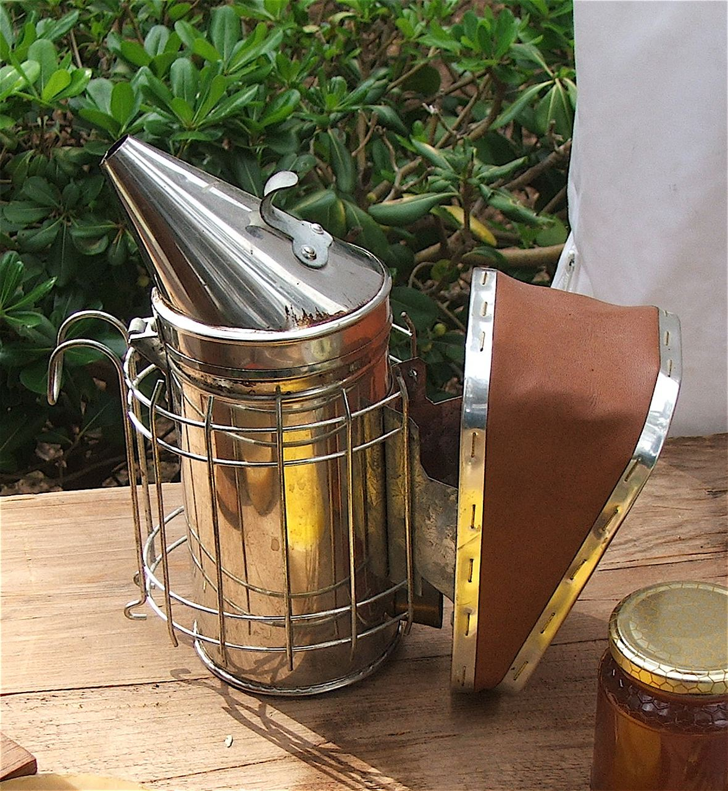
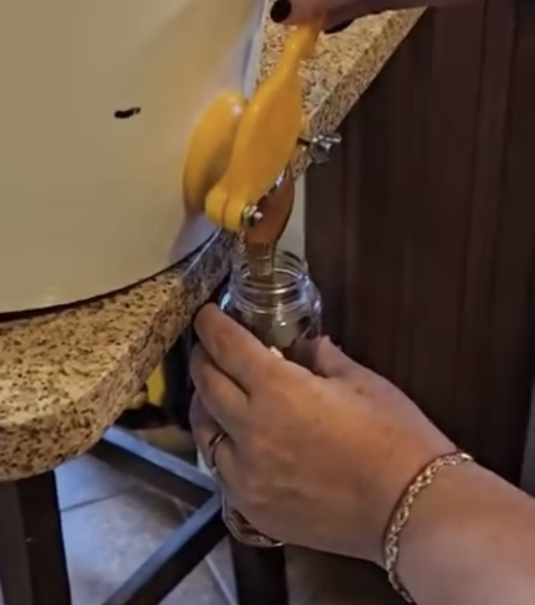
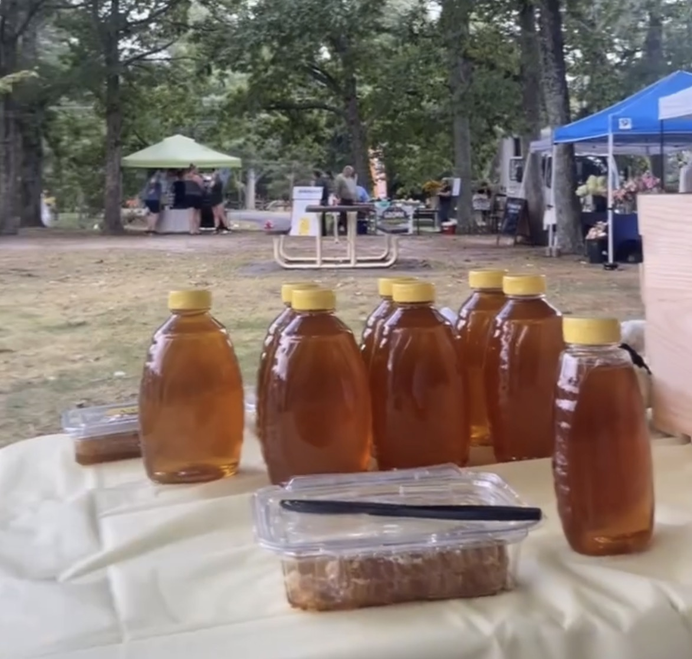

Introduction
This page looks at honey from two different perspectives, the final product and the process behind it. I organized the images into two groups to show not just what honey looks like, but also what goes into making it. The first group focuses on different types of raw honey, showing how it can vary in color, texture, and form depending on how it is produced and stored. These differences are not always something people notice, especially when buying honey from a store. The second group focuses on beekeeping and the tools and environments involved. These images show what is actually required to produce honey, from the hive itself to the equipment used by beekeepers. This helps show that honey is not just something you buy, but something that comes from a process that takes time, effort, and care. Overall, this page is meant to help people better understand and appreciate honey by showing both what it is and how it is made. By looking at these images together, the viewer can start to see connections between the product and the work behind it, which adds more meaning to something that might otherwise seem simple.
Types of Raw Honey
This group documents different forms of raw honey. These are some of the Honey products that are available!






Beekeeping in Practice
This group focuses on the tools, spaces, and actions involved in beekeeping. These images showcase the process behind honey production.






Data Overview
This data compares key aspects of honey production and beekeeping.
| Item | Category | Purpose |
|---|---|---|
| Raw Honey Jar | Product | Consumption |
| Bee Smoker | Tool | Calms bees |
| Hive Box | Environment | Bee habitat |